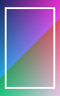
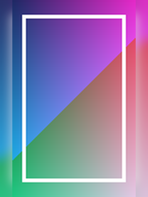
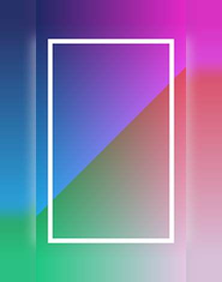
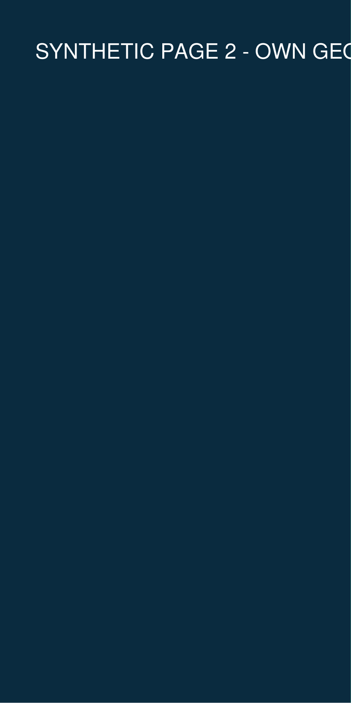
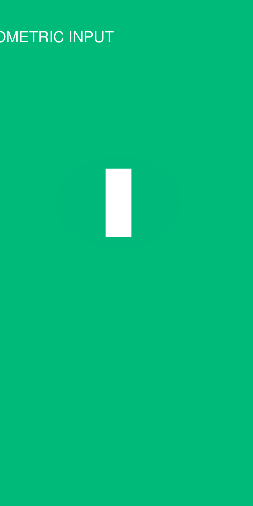
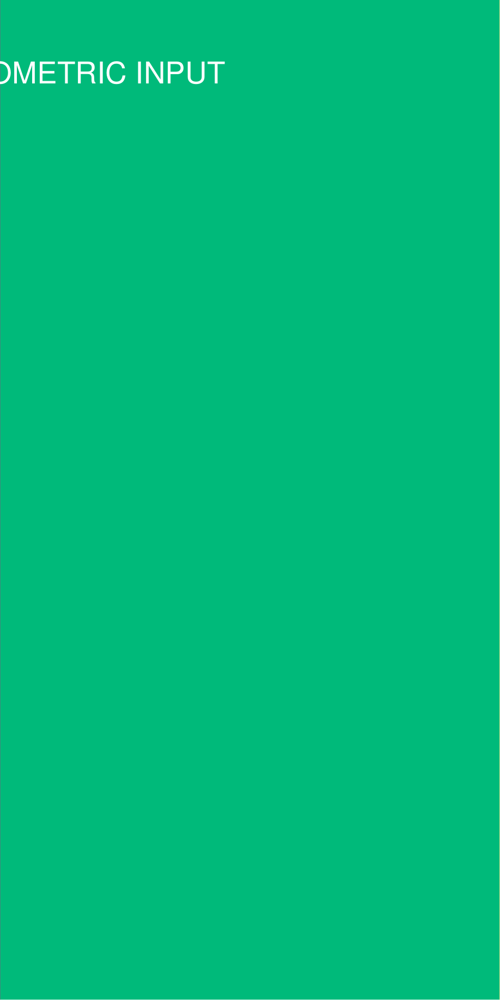

SVG geometry and 13 icons
Original local geometry functions; actual Sharp render.
These are actual program outputs using newly generated synthetic material. They are not original event posters, commercial assets, photographs, or print-production proof.
First demonstration · Actual 8 × 10 cm PDF · Validation data
Original local geometry functions; actual Sharp render.
Actual render of the preserved base function.

New geometric portrait. No business material.

Center pixels are identical to the resized portrait.

Original center and four corner colors verified.

Actual crop from a newly generated two-page PDF.
Actual crop from a newly generated two-page PDF.

Actual crop from a newly generated two-page PDF.

Actual crop from a newly generated two-page PDF.
Actual crop from a newly generated two-page PDF.

Actual crop from a newly generated two-page PDF.
Word, original business pipelines and physical printing were not tested. Wide input images may be clipped by the historical extension algorithm.